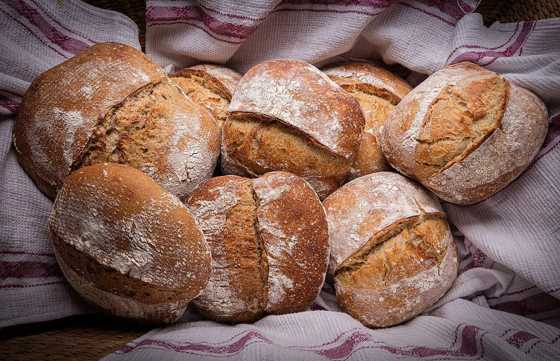
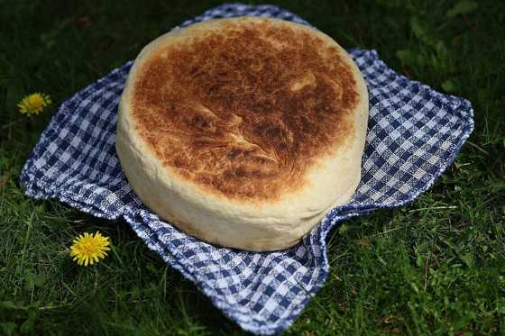
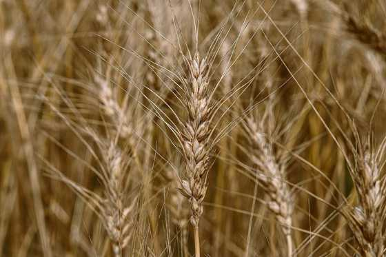
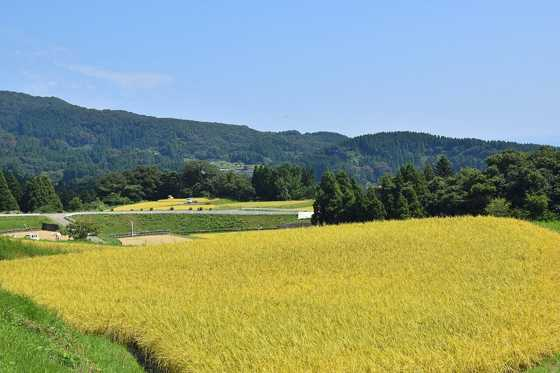
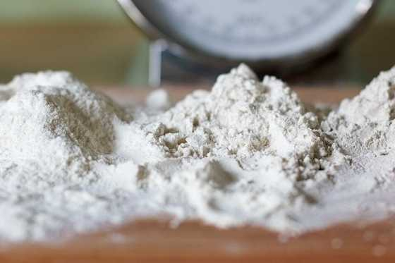
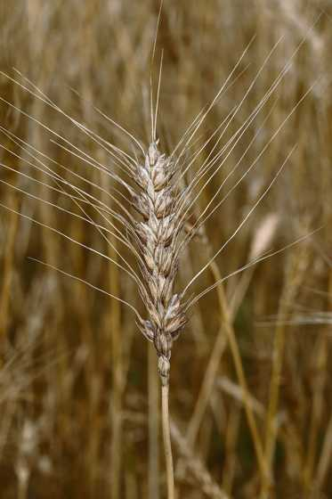
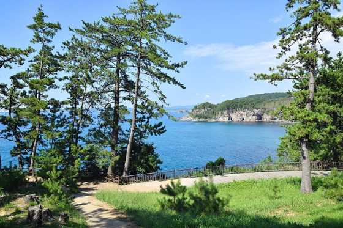
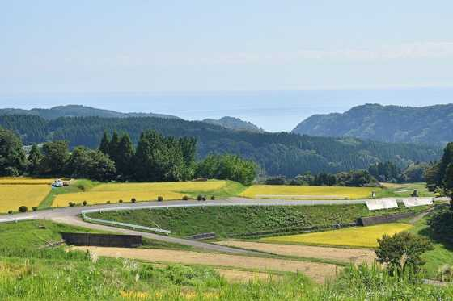
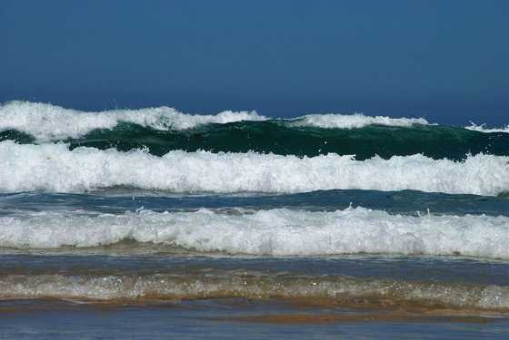
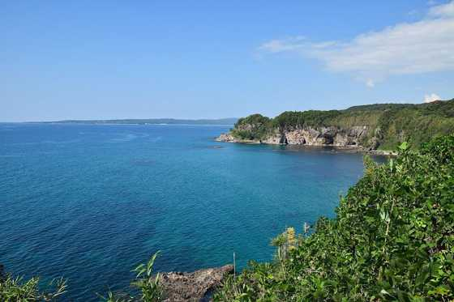

KAHOKU / ISHIKAWA
自家製酵母 こでパン
お米から起こした酒種で、体にやさしいパンをゆっくり焼く、町のちいさなパン屋さん。
ABOUT
お米から起こす、酒種のパン
こでパンは、石川県かほく市大崎北にあるパン屋さんです。Instagramのプロフィールでは「町のちいさなパン屋さん」「原料にこだわった身体にやさしいパン作り」と紹介されています。
- パンの酵母は、お米から作る酒種(Instagram投稿より)
- 使うお米は自然栽培のコシヒカリ(Instagram投稿より)
- お米づくりにも取り組んでいる(「2024米作り」のハイライトより)
店名「こで」の意味は確認できていません。このページのデザインは、お米の白と稲穂の金色を手がかりにした制作側のイメージです。





VOICEイメージ例創作のイメージです イメージ例創作のイメージです イメージ例創作のイメージです
口コミ(イメージ例)
噛むほどに素朴な甘みがあって、朝ごはんが楽しみになりました。
お米から作った酵母と聞いて興味がわき、ベーグルを買ってみました。
こぢんまりとしたお店で、ゆっくり選べるのがうれしいです。
上記は実在のお客様の声ではなく、制作側が作成したイメージです。
ACCESS
アクセス・Instagram
〒929-1127 石川県かほく市大崎北22-1
電話:準備中 / 営業時間・定休日:準備中



